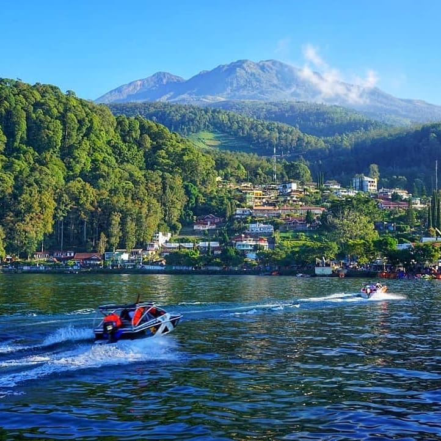
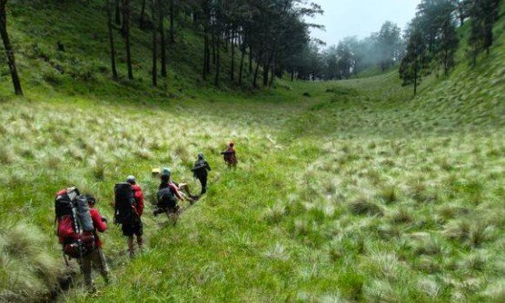

Posting Teratas

Baca selengkapnya >>>>>
Telaga Sarangan
Wisata Seru dan Sejuk
Mampir ke Jawa Timur, kamu bisa jalan-jalan di Telaga Sarangan. Tak hanya bisa melihat sunrise dan danau indah...Baca selengkapnya >>>>>

Baca selengkapnya >>>>>
Sabana Lawu
Pesona Sabana Gunung Lawu via Candi Cetho
Terletak di perbatasan provinsi Jawa Tengah dan Jawa Timur, Gunung Lawu menjadi gunung tertinggi ke-6 di Pulau Jawa. Gunung ini sering menjadi pilihan bagi pendaki pemula yang baru pertama kali naik gunung. Untuk dapat mencapai puncak Gunung Lawu, kita dapat melalui beberapa jalur resmi yang telah disediakan antara lain Cemoro Kandang, Cemoro Sewu, dan Candi Cetho....Baca selengkapnya >>>>>